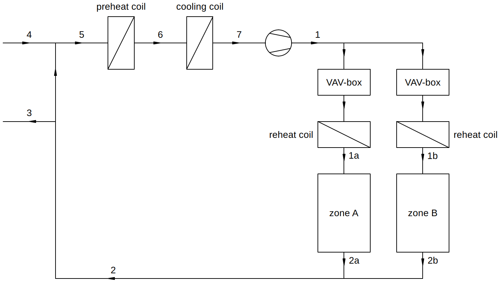

Design of a Multi-Zone VAV System (the Long Way)
Contents
Design of a Multi-Zone VAV System (the Long Way)#
In this notebook a multi-zone VAV system is designed with the package hvac.air_conditioning. The example is taken from the book Heating and Cooling of Buildings by T. Agami Reddy, Jan F. Kreider, Peter S. Curtiss and Ari Rabl (3th Edition, 2017), Chapter 19.
from hvac import Quantity
from hvac.fluids import HumidAir
from hvac.air_conditioning import AirConditioningProcess, AdiabaticMixing, AirStream, Fan
Q_ = Quantity
0. Design Data#
A two-zone building is to be equipped with a VAV system with preheat and reheat under the load conditions noted as follows. Size the supply fan, cooling coil, preheat coil, and reheat coil (or baseboard heating) for this building. Note that these will also apply to a CAV system under peak design conditions.
Space loads
| Zone A (Exterior) | Zone B (Interior) | |
|---|---|---|
| Sensible peak summer design cooling load | 224,844 Btu/hr | 103,308 Btu/hr |
| Latent peak summer design cooling load | 56,000 Btu/hr | 20,000 Btu/hr |
| Sensible peak winter design load | -143,000 Btu/hr | 49,092 Btu/hr |
| Zone temperature | 75°F | 75°F |
Notice that interior zone B still requires cooling in winter.
Design parameters
summer design dry-and wet-bulb temperatures: 97°F and 76°F.
winter design temperature: 7°F and air assumed to be totally dry.
pressure drop in supply system at full air-flow: 3.0 inWG.
fan efficiency: 60%.
return air fan air temperature rise: none.
ventilation airflow rate: 2400 ft3/min.
relative air humidity at cooling coil outlet: 85%.
temperature difference between supply air and zone air: 20°F (to ensure proper mixing).
maximum supply air temperature: 105°F (to avoid stratification).
Sketch

Assumptions
Ignore factors not included in the list given earlier, such as duct heat losses and gains.
The location is assumed to be at sea level.
Rather than use enthalpy balances on the zones, the flows will be designed based on sensible heat loads (this is meant to simplify the problem).
Peak loads are coincident; no diversity adjustment is used.
During peak heating, latent loads on the space are negligible.
During winter, room humidifiers are used to maintain the necessary humidity levels.
The supply airflow to the zones cannot be reduced to less than 60 % of the full-load design value by mass to ensure proper mixing of the cold supply air once it enters the space.
COOLING DESIGN DAY#
1. Mass Flow Rate of Ventilation Air#
outdoor_air = HumidAir(Tdb=Q_(97, 'degF'), Twb=Q_(76, 'degF'))
V_vent = Q_(2400, 'ft ** 3 / min')
m_vent = outdoor_air.rho * V_vent
ja.display_list([
f"ventilation mass flow rate: <b>{m_vent.to('lb / hr'):~P.0f}</b>"
])
- ventilation mass flow rate: 10029 lb/h
2. Zone Supply Air Flow Rates#
The zone air temperature is 75 °F. To ensure proper mixing with space air the supply air temperature is limited to 20 °F below the zone air temperature. The RH of the air leaving the cooling coil is specified at 85 %. As there is no addition nor extraction of water from the air between the cooling coil and the zones, this is also the RH of the supply air to the zones.
supply_air = HumidAir(Tdb=Q_(75 - 20, 'degF'), RH=Q_(85, 'pct'))
Mass flow rate of supply air to zone A
The required mass flow rate of supply air to zone A is determined to compensate for the sensible heat load of the zone.
zone_A = AirConditioningProcess(
air_in=supply_air,
T_ao=Q_(75, 'degF'),
Q_sen=Q_(224_844, 'Btu / hr')
)
m_supply_zA = zone_A.m_da
ja.display_list([
f"supply air mass flow rate to zone A: <b>{m_supply_zA.to('lb / min'):~P.3f}</b>"
])
- supply air mass flow rate to zone A: 769.099 lb/min
Mass flow rate of supply air to zone B
zone_B = AirConditioningProcess(
air_in=supply_air,
T_ao=Q_(75, 'degF'),
Q_sen=Q_(103_308, 'Btu / hr')
)
m_supply_zB = zone_B.m_da
ja.display_list([
f"supply air mass flow rate to zone B: <b>{m_supply_zB.to('lb / min'):~P.3f}</b>"
])
- supply air mass flow rate to zone B: 353.374 lb/min
Total mass flow rate of supply air
m_supply = m_supply_zA + m_supply_zB
ja.display_list([
f"total supply air mass flow rate: <b>{m_supply.to('lb / min'):~P.3f}</b>"
])
- total supply air mass flow rate: 1122.473 lb/min
3. Supply Fan Power, Fan Heating and Air Condition at Cooling Coil Exit#
Mechanical supply fan power
The fan pressure is already given (in reality this needs to be calculated after the supply air flow rates to the zones have been determined). The fan efficiency is also given.
dP_fan = Q_(3.0, 'inch_H2O_60F')
eta_fan = Q_(60, 'pct')
To determine the fan power the total volume flow rate of supply air to the zones must first be calculated:
V_supply = supply_air.v * m_supply
Fan power then follows from:
W_fan = V_supply * dP_fan / eta_fan
ja.display_list([
f"supply fan power: <b>{W_fan.to('hp'):~P.0f}</b>"
])
- supply fan power: 12 hp
Supply air temperature raise due to fan heating
supply_fan = Fan(
air_out=supply_air,
fan_efficiency=eta_fan,
fan_pressure=dP_fan
)
dT_fan = supply_fan.air_out.Tdb - supply_fan.air_in.Tdb
ja.display_list([
f"fan temperature rise: <b>{dT_fan.to('delta_degF'):~P.0f}</b>"
])
- fan temperature rise: 2 Δ°F
Air Condition at Cooling Coil Exit
cooled_air = HumidAir(Tdb=supply_air.Tdb - dT_fan, RH=Q_(85, 'pct'))
ja.display_list([
f"cooled air: <b>{cooled_air.Tdb.to('degF'):~P.0f} TDB, {cooled_air.W.to('lb / lb'):~P.5f} lb<sub>w</sub>/lb<sub>da</sub></b>"
])
- cooled air: 53 °F TDB, 0.00733 lbw/lbda
4. Return Air Condition#
Zone A
zone_A = AirConditioningProcess(
air_in=supply_air,
T_ao=Q_(75, 'degF'),
m_da=m_supply_zA,
Q_sen=Q_(224_844, 'Btu / hr'),
Q_lat=Q_(56_000, 'Btu / hr')
)
return_air_zA = zone_A.air_out
ja.display_list([
f"return air zone A: <b>{return_air_zA.Tdb.to('degF'):~P.0f} TDB, {return_air_zA.W.to('lb / lb'):~P.5f} lb<sub>w</sub>/lb<sub>da</sub></b>"
])
- return air zone A: 75 °F TDB, 0.00894 lbw/lbda
Zone B
zone_B = AirConditioningProcess(
air_in=supply_air,
T_ao=Q_(75, 'degF'),
m_da=m_supply_zB,
Q_sen=Q_(103_308, 'Btu / hr'),
Q_lat=Q_(20_000, 'Btu / hr')
)
return_air_zB = zone_B.air_out
ja.display_list([
f"return air zone B: <b>{return_air_zB.Tdb.to('degF'):~P.0f} TDB, {return_air_zB.W.to('lb / lb'):~P.5f} lb<sub>w</sub>/lb<sub>da</sub></b>"
])
- return air zone B: 75 °F TDB, 0.00869 lbw/lbda
Adiabatic mixing of return air from zones
return_air_mixing = AdiabaticMixing(
in1=AirStream(state=return_air_zA, m_da=m_supply_zA),
in2=AirStream(state=return_air_zB, m_da=m_supply_zB),
out=AirStream(m_da=m_supply)
)
return_air = return_air_mixing.stream_out.state
ja.display_list([
f"return air from zones: <b>{return_air.Tdb.to('degF'):~P.0f} TDB, {return_air.W.to('lb / lb'):~P.5f} lb<sub>w</sub>/lb<sub>da</sub></b>"
])
- return air from zones: 75 °F TDB, 0.00886 lbw/lbda
5. Air Condition at Cooling Coil Entrance#
mixing_chamber = AdiabaticMixing(
in1=AirStream(state=outdoor_air, m_da=m_vent),
in2=AirStream(state=return_air, m_da=m_supply - m_vent),
out=AirStream(m_da=m_supply_zA + m_supply_zB)
)
mixed_air = mixing_chamber.stream_out.state
ja.display_list([
f"mixed air: <b>{mixed_air.Tdb.to('degF'):~P.1f} TDB, {mixed_air.W.to('lb / lb'):~P.5f} lb<sub>w</sub>/lb<sub>da</sub></b>"
])
- mixed air: 78.3 °F TDB, 0.00971 lbw/lbda
6. Cooling Coil Load#
cooling_coil = AirConditioningProcess(
air_in=mixed_air,
air_out=cooled_air,
m_da=m_supply
)
ja.display_list([
f"cooling coil load: <b>{cooling_coil.Q.to('Btu / hr'):~P.0f}</b>",
f"cooling coil ADP: <b>{cooling_coil.ADP.Tdb.to('degF'):~P.0f} TDB, {cooling_coil.ADP.W.to('lb / lb'):~P.5f} lb<sub>w</sub>/lb<sub>da</sub></b>",
f"cooling coil contact factor: <b>{cooling_coil.beta.to('pct'):~P.0f}</b>"
])
- cooling coil load: -586874 Btu/h
- cooling coil ADP: 46 °F TDB, 0.00669 lbw/lbda
- cooling coil contact factor: 79 %
HEATING DESIGN DAY#
1. Mass Flow Rate of Ventilation Air#
outdoor_air = HumidAir(Tdb=Q_(7, 'degF'), RH=Q_(0, 'pct')) # dry air
V_vent = Q_(2400, 'ft ** 3 / min')
m_vent = outdoor_air.rho * V_vent
ja.display_list([
f"ventilation mass flow rate: <b>{m_vent.to('lb / hr'):~P.0f}</b>"
])
- ventilation mass flow rate: 12250 lb/h
2. Preheat Coil Peak Load#
The peak load on the preheat coil is determined based on the load needed to heat the cold outdoor ventilation air to the nominal coil outlet temperature.
preheat_coil = AirConditioningProcess(
air_in=outdoor_air,
T_ao=cooled_air.Tdb,
m_da=m_vent
)
Q_preheat_peak = preheat_coil.Q_sen
ja.display_list([
f"preheat coil peak load: <b>{Q_preheat_peak.to('Btu/hr'):~P.0f}</b>"
])
- preheat coil peak load: 137878 Btu/h
3. Zone Supply Air Flow Rates and Supply Air Temperatures#
Zone A (requires heating)
At first take the maximum allowable supply air temperature of 105 °F to determine mass flow rate.
zone_A = AirConditioningProcess(
T_ai=Q_(105, 'degF'),
T_ao=Q_(75, 'degF'),
Q_sen=Q_(-143_000, 'Btu / hr')
)
m_supply_zA_winter = zone_A.m_da
ja.display_list([
f"supply air mass flow rate to zone A: <b>{m_supply_zA_winter.to('lb / min'):~P.3f}</b>"
])
- supply air mass flow rate to zone A: 326.096 lb/min
Recall the stipulation that the supply air mass flow rate cannot be less than 60 % of the peak air flow to ensure proper mixing with zone air.
m_supply_zA_winter = max(m_supply_zA_winter, 0.6 * m_supply_zA)
ja.display_list([
f"supply air mass flow rate to zone A: <b>{m_supply_zA_winter.to('lb / min'):~P.3f}</b>"
])
- supply air mass flow rate to zone A: 461.459 lb/min
Supply air temperature:
zone_A = AirConditioningProcess(
T_ao=Q_(75, 'degF'),
m_da=m_supply_zA_winter,
Q_sen=Q_(-143_000, 'Btu / hr')
)
T_supply_zA = zone_A.T_ai
ja.display_list([
f"supply air temperature for zone A: <b>{T_supply_zA.to('degF'):~P.3f}</b>"
])
- supply air temperature for zone A: 96.200 °F
Zone B (requires cooling)
At first take the minimum supply air temperature (cooling) to determine mass flow rate.
zone_B = AirConditioningProcess(
T_ai=supply_air.Tdb,
T_ao=Q_(75, 'degF'),
Q_sen=Q_(49_092, 'Btu / hr')
)
m_supply_zB_winter = zone_B.m_da
ja.display_list([
f"supply air mass flow rate to zone B: <b>{m_supply_zB_winter.to('lb / min'):~P.3f}</b>"
])
- supply air mass flow rate to zone B: 167.924 lb/min
Next, check again for the condition that mass flow rate cannot be less than 60 % of peak air flow.
m_supply_zB_winter = max(m_supply_zB_winter, 0.6 * m_supply_zB)
ja.display_list([
f"supply air mass flow rate to zone B: <b>{m_supply_zB_winter.to('lb / min'):~P.3f}</b>"
])
- supply air mass flow rate to zone B: 212.025 lb/min
Supply air temperature:
zone_B = AirConditioningProcess(
T_ao=Q_(75, 'degF'),
m_da=m_supply_zB_winter,
Q_sen=Q_(49_092, 'Btu / hr')
)
T_supply_zB = zone_B.T_ai
ja.display_list([
f"supply air temperature for zone B: <b>{T_supply_zB.to('degF'):~P.3f}</b>"
])
- supply air temperature for zone B: 59.160 °F
Total supply air mass flow rate
m_supply = m_supply_zA_winter + m_supply_zB_winter
ja.display_list([
f"total supply air mass flow rate: <b>{m_supply.to('lb / min'):~P.3f}</b>"
])
- total supply air mass flow rate: 673.484 lb/min
Global Supply Air Temperature
The global supply air temperature must be the smallest required supply air temperature of all zones.
supply_air = HumidAir(Tdb=min(T_supply_zA, T_supply_zB), RH=Q_(0, 'pct'))
ja.display_list([
f"global supply air temperature: <b>{supply_air.Tdb.to('degF'):~P.3f}</b>"
])
- global supply air temperature: 59.160 °F
4. Return Air Condition#
return_air_mixing = AdiabaticMixing(
in1=AirStream(state=HumidAir(Tdb=Q_(75, 'degF'), RH=Q_(0, 'pct')), m_da=m_supply_zA_winter),
in2=AirStream(state=HumidAir(Tdb=Q_(75, 'degF'), RH=Q_(0, 'pct')), m_da=m_supply_zB_winter),
out=AirStream(m_da=m_supply)
)
return_air = return_air_mixing.stream_out.state
ja.display_list([
f"return air temperature: <b>{return_air.Tdb.to('degF'):~P.3f}</b>"
])
- return air temperature: 75.000 °F
5. Adiabatic Mixing of Return Air and Outdoor Ventilation Air#
mixing_chamber = AdiabaticMixing(
in1=AirStream(state=outdoor_air, m_da=m_vent),
in2=AirStream(state=return_air, m_da=m_supply - m_vent),
out=AirStream(m_da=m_supply)
)
mixed_air = mixing_chamber.stream_out.state
ja.display_list([
f"mixed air temperature: <b>{mixed_air.Tdb.to('degF'):~P.3f}</b>"
])
- mixed air temperature: 54.392 °F
6. Fan Heating and Air Condition at Cooling Coil Exit#
Supply air temperature raise due to fan heating
supply_fan = Fan(
air_out=supply_air,
fan_efficiency=eta_fan,
fan_pressure=dP_fan
)
dT_fan = supply_air.Tdb - supply_fan.air_in.Tdb
ja.display_list([
f"fan temperature rise: <b>{dT_fan.to('delta_degF'):~P.0f}</b>"
])
- fan temperature rise: 2 Δ°F
Air Condition at Cooling Coil Exit
cooled_air = HumidAir(Tdb=supply_air.Tdb - dT_fan, RH=Q_(0, 'pct'))
ja.display_list([
f"temperature cooled air: <b>{cooled_air.Tdb.to('degF'):~P.1f}</b>"
])
- temperature cooled air: 57.3 °F
Check if Preheating the Mixed Air is necessary on Heating Design Day
Notice that the cooled air temperature is higher than the mixed air temperature. The mixed air is therefore preheated to the cooled air temperature.
preheat_coil = AirConditioningProcess(
air_in=mixed_air,
air_out=cooled_air,
m_da=m_supply
)
preheated_air = cooled_air
ja.display_list([
f"preheat coil load at design conditions: {preheat_coil.Q.to('Btu / hr'):~P.0f}"
])
- preheat coil load at design conditions: 29050 Btu/h
7. Cooling Coil Load#
cooling_coil = AirConditioningProcess(
T_ai=preheated_air.Tdb,
T_ao=cooled_air.Tdb,
m_da=m_supply
)
ja.display_list([
f"cooling coil load: <b>{cooling_coil.Q_sen.to('Btu / hr'):~P.0f}</b>"
])
- cooling coil load: 0 Btu/h
8. Reheat Coil Loads#
Zone A
reheat_coil_zA = AirConditioningProcess(
T_ai=supply_air.Tdb,
T_ao=T_supply_zA,
m_da=m_supply_zA_winter
)
ja.display_list([
f"reheat coil load: <b>{reheat_coil_zA.Q_sen.to('Btu / hr'):~P.0f}</b>"
])
- reheat coil load: 249846 Btu/h
Zone B
reheat_coil_zB = AirConditioningProcess(
T_ai=supply_air.Tdb,
T_ao=T_supply_zB,
m_da=m_supply_zB_winter
)
ja.display_list([
f"reheat coil load: <b>{reheat_coil_zB.Q_sen.to('Btu / hr'):~P.0f}</b>"
])
- reheat coil load: 0 Btu/h
Total peak heat requirement
Q_heat_tot = reheat_coil_zA.Q_sen + reheat_coil_zB.Q_sen + Q_preheat_peak
ja.display_list([
f"peak heat requirement: <b>{Q_heat_tot.to('Btu / hr'):~P.0f}</b>"
])
- peak heat requirement: 387724 Btu/h
This heat rate must be increased by pickup loads from night setback, safety factors, and piping losses to size the coils and the boiler.